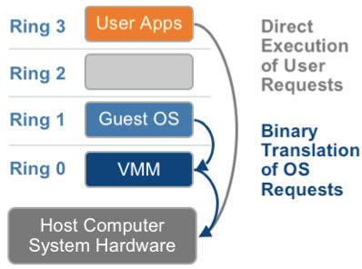
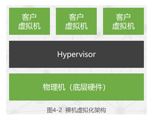

https://github.com/0voice/Introduce_to_virtualization#nav_vt0
https://qiankunli.github.io/2021/09/02/kvm_intro.html
- 虚拟机监控程序是一种创建并运行虚拟机（VM）的软件。
- 虚拟机监控程序（有时也称为 VMM）会将虚拟机监控程序的操作系统与虚拟机的资源分离开，并创建和管理这些 VM。
名词解释
VMM: 虚拟机监视器
- 在宿主机上表现为一个提供虚拟机CPU, 内存以及一系列硬件虚拟的实体，这个实体在体系中就是一个进程，如qemu-kvm.
- VMM负责管理虚拟机的资源，并拥有所有虚拟机资源的控制权，包括切换虚拟机的CPU上下文等。
Guest: 客户机操作系统/二进制程序。
- 对于VMM，是一堆指令集，只需要知道rip寄存器值就可以加载。
- Guest运行需要虚拟CPU，当Guest代码运行的时候，处于VMX non-root模式，此模式下，该用什么指令还是用什么指令，该用什么寄存器还用什么寄存器，该用cache还是用cache，但是在执行到特殊指令的时候（比如Demo中的out指令），把CPU控制权交给VMM，由VMM来处理特殊指令，完成硬件操作。
CPU运行级别：
- CPU支持ring0~ring3 4个等级，但是Linux只使用了其中的两个ring0,ring3。当CPU寄存器标示了当前CPU处于ring0级别的时候，表示此时CPU正在运行的是内核的代码。而当CPU处于ring3级别的时候，表示此时CPU正在运行的是用户级别的代码。当发生系统调用或者进程切换的时候，CPU会从ring3级别转到ring0级别。ring3级别是不允许执行硬件操作的，所有硬件操作都需要内核提供的系统调用来完成。
- 在虚拟化技术中，我们知道有宿主机和虚拟机，所以虚拟化环境中，也会拥有两个操作系统内核：宿主机的操作系统内核和虚拟机操作系统内核，它们都会执行Ring0级别的指令。但是Hypervisor需要对系统资源进行统一管理调度，所以Hypervisor 必须运行在最高的特权等级Ring 0，为了避免Guest OS 控制系统资源，对其他Guest OS的资源造成影响，必须降低Guest OS 的运行级别，这就是经典的虚拟化方法：特权等级解除技术(Privilege deprivileging)。当解除了 Guest OS 的特权后，Guest OS 的大部分指令仍可以在硬件上直接运行，只有当执行到特权指令时，才会陷入到Hypervisor模拟执行（陷入－模拟）。
VMX：
- 为了从CPU层面支持VT技术，Intel-V 在 ring0~ring3 的基础上， 扩展了传统的x86处理器架构，引入了VMX模式，VMX分为root和non-root。VMM运行在VMX root模式；Guest运行在VMX non-root模式。
特权指令：系统中有一些操作和管理关键系统资源的指令，这些指令只有在最高特权级上能够正确运行。如果在非最高特权级上运行，特权指令会引发一个异常，处理器会陷入到最高特权级，交由系统软件处理了。
敏感指令：操作特权资源的指令，包括修改虚拟机的运行模式或者下面物理机的状态；读写时钟、中断等寄存器；访问存储保护系统、地址重定位系统及所有的I/O指令。
- 根据Popek和Goldberg的定义，指令集支持虚拟化的前提是：所有敏感指令都是特权指令。很可惜x86指令集不能满足这个要求。
- 自陷：通过处理器所拥有的软件指令、可预期地使处理器正在执行的程序的执行流程发生变化，以执行特定的程序。自陷是显式的事件，需要无条件地执行
虚拟化监控程序VMM类型
系统虚拟化体系结构分为宿主型/独立监控型两种类型：
- 独立监控型（Type-1）是直接运行于硬件层之上的虚拟化类型
- Xen、Hyper-V、Vmware ESXi
- 宿主型（Type-2）是需要运行在Host OS之上的，并提供驱动程序与硬件通信的虚拟化类型
- VMware Workstation, VirtualBox
- 独立监控型（Type-1）是直接运行于硬件层之上的虚拟化类型
KVM 将 Linux 转变为 1 类（裸机）虚拟机监控程序。
基于内核的虚拟机（KVM）是一种内建于Linux的开源虚拟化技术，
- KVM可以将Linux转变为虚拟机监控程序，是主机计算机能够运行多个隔离的虚拟环境，即虚拟客户机（VM）。
- KVM 将 Linux 转变为 1 类（裸机）虚拟机监控程序。
所有的虚拟机监控程序都需要一些操作系统层面的组件才能运行虚拟机
- 内存管理器
- 进程调度程序
- 输入/输出（I/O）堆栈
- 设备驱动程序
- 安全管理器
- 网络堆栈等
由于 KVM 是 Linux 内核的一部分，因此它包含了所有这些组件。每个虚拟机都像常规 Linux 进程一样实施，由标准的 Linux 调度程序进行调度，并且使用专门的虚拟硬件，如网卡、图形适配器、CPU、内存和磁盘等。
虚拟机监控程序的类型
虚拟化有两种不同类型的虚拟机监控程序可用：第 1 类和第 2 类虚拟机监控程序。
第 1 类
- 第 1 类虚拟机监控程序（也称为本机或裸机虚拟机监控程序）直接在主机的硬件上运行，以管理虚拟客户机操作系统。它可取代主机操作系统，而虚拟机监控程序会直接向硬件调度 VM 资源。
- 这一类虚拟机监控程序在企业数据中心或其他基于服务器的环境中最为常见。
- KVM、Microsoft Hyper-V 和 VMware vSphere 就是典型的第 1 类虚拟机监控程序。从 2007 年开始，KVM 已被合并到 Linux 内核中。因此，如果您使用的是较新版本的 Linux，就已经可以访问 KVM。
第 2 类
- 第 2 类虚拟机监控程序也称为托管虚拟机监控程序，它在常规操作系统上以软件层或应用的形式运行。
- 这种虚拟机监控程序是通过从主机操作系统中抽象出虚拟客户机操作系统来工作的。虚拟机资源针对主机操作系统进行调度，然后针对硬件来执行。
- 第 2 类虚拟机监控程序更适合希望在私人计算机上运行多个操作系统的个人用户。
- VMware Workstation 和 Oracle VirtualBox 就是典型的第 2 类虚拟机监控程序。
虚拟化技术分类
CPU虚拟化
- cpu 虚拟化的核心难点是特权指令，对于特权指令，guest os 要么改自己不执行特权指令，要么VMM 为cpu 报错擦屁股，要么cpu 不报错。
基于二进制翻译的全虚拟化

客户操作系统运行在Ring 1, 它在执行特权指令时，会触发异常（CPU的机制，没权限的指令会触发异常），VMM（hypervisor ）会捕获这个异常，在异常里面做翻译，模拟，最后返回到客户操作系统内，客户操作系统认为自己的特权指令工作正常，继续运行。但是这个性能损耗，就非常的大，简单的一条指令，执行完，了事，现在却要通过复杂的异常处理过程。
- 所谓特权指令是指有特权权限的指令，由于这类指令的权限最大，如果使用不当，将导致整个系统崩溃。比如：清内存、置时钟、分配系统资源、修改虚存的段表和页表，修改用户的访问权限等。
- 特权解除(优先级压缩)：从上述的软件辅助全虚拟化架构图中可以看出，VMM、GuestOS、GuestApplications都是运行在Ring 1-3用户态中的应用程序代码。当在GuestOS中执行系统内核的特权指令时，一般都会触发异常。这是因为用户态代码不能直接运行在核心态中，而且系统内核的特权指令大多都只能运行在Ring 0核心态中。在触发了异常之后，这些异常就会被VMM捕获，再由VMM将这些特权指令进行虚拟化成为只针对虚拟CPU起作用的虚拟特权指令。其本质就是使用若干能运行在用户态中的非特权指令来模拟出只针对GuestOS有效的虚拟特权指令，从而将特权指令的特权解除掉。
缺点：但是特权解除的问题在于当初设计标准x86架构CPU时，并没有考虑到要支持虚拟化技术，所以会存在一部分特权指令运行在Ring 1用户态上，而这些运行在Ring 1上的特权指令并不会触发异常然后再被VMM捕获。从而导致在GuestOS中执行的特权指令直接对HostOS造成了影响(GuestOS和HostOS没能做到完全隔离)。
针对这个问题，再引入了陷入模拟的机制。
- 特权解除(优先级压缩)：从上述的软件辅助全虚拟化架构图中可以看出，VMM、GuestOS、GuestApplications都是运行在Ring 1-3用户态中的应用程序代码。当在GuestOS中执行系统内核的特权指令时，一般都会触发异常。这是因为用户态代码不能直接运行在核心态中，而且系统内核的特权指令大多都只能运行在Ring 0核心态中。在触发了异常之后，这些异常就会被VMM捕获，再由VMM将这些特权指令进行虚拟化成为只针对虚拟CPU起作用的虚拟特权指令。其本质就是使用若干能运行在用户态中的非特权指令来模拟出只针对GuestOS有效的虚拟特权指令，从而将特权指令的特权解除掉。
- 陷入模拟(二进制翻译)：就是VMM会对GuestOS中的二进制代码(运行在CPU中的代码)进行扫描，一旦发现GuestOS执行的二进制代码中包含有运行在用户态上的特权指令二进制代码时，就会将这些二进制代码翻译成虚拟特权指令二进制代码或者是翻译成运行在核心态中的特权指令二进制代码从而强制的触发异常。这样就能够很好的解决了运行在Ring 1用户态上的特权指令没有被VMM捕获的问题，更好的实现了GuestOS和HostOS的隔离。
- 无论是HostOS还是GuestOS，只要是一个OS都必然会存在有敏感指令(reboot、shutdown等)。试想如果我们希望将GuestOS重启，并在GuestOS中执行了reboot指令，但是却将HostOS给重启了，这将会非常糟糕。VMM的陷入模拟机制就是为了解决这个问题。e.g. 在GuestOS中执行了敏感指令reboot时，VMM首先会将敏感指令reboot捕获、检测并判定其为敏感指令。此时VMM就会陷入模拟，将敏感指令reboot模拟成一个只针对GuestOS进行操作的、非敏感的、并且运行在非核心态上的”reboot”指令，最后CPU执行虚拟机的重启操作。
- 虚拟机可以直接发出一般指令，如果是一般指令，Hypervisor截获后再转给物理CPU执行，但是因为虚拟机权限不够，如果尝试发出特权指令就会触发中断机制，而陷入到Hypervisor（实际虚拟机的特权指令并没有发出去），由Hypervisor模拟执行特权指令，这就是“陷入-模拟”机制；
简而言之，软件辅助虚拟化能够成功的将所有在GuestOS中执行的系统内核特权指令进行捕获、翻译，使之成为只能对GuestOS生效的虚拟特权指令。但是退一步来说，之所以需要这么做的前提是因为CPU并不能准确的去判断一个特权指令到底是由GuestOS发出的还是由HostOS发出的，这样也就无法针对一个正确的OS去将这一个特权指令执行。
超虚拟化（或者半虚拟化/操作系统辅助虚拟化）
不需要去翻译 指令
半虚拟化的思想就是， 修改操作系统内核，替换掉不能虚拟化的指令， 通过超级调用（hypercall ）直接和底层的虚拟化层hypervisor 来通讯 ，hypervisor 同时也提供了超级调用接口来满足其他关键内核操作，比如内存管理、中断和时间保持。
这种做法省去了全虚拟化中的捕获和模拟，大大提高了效率。所以像XEN这种半虚拟化技术，客户机操作系统都是有一个专门的定制内核版本，和x86、mips、arm这些内核版本等价。这样以来，就不会有捕获异常、翻译、模拟的过程了，性能损耗非常低。这就是XEN这种半虚拟化架构的优势。这也是为什么XEN只支持虚拟化Linux，无法虚拟化windows原因，微软不改代码啊。
硬件辅助的虚拟化
- CPU厂商Intel 和 AMD 开始支持虚拟化了。 Intel 引入了 Intel-VT （Virtualization Technology）技术。 这种 CPU，有 VMX root operation 和 VMX non-root operation两种模式，两种模式都支持Ring 0 ~ Ring 3 共 4 个运行级别。这样，VMM 可以运行在 VMX root operation模式下，客户OS运行在VMX non-root operation模式下。

- 两种操作模式可以相互转换。运行在VMX root operation 模式下的VMM通过显示调用 VMLAUNCH 或 VMRESUME 指令切换到 VMX non-root operation 模式，硬件自动加载 Guest OS 的上下文，于是 Guest OS 获得运行，这种转换称为 VM entry。
- Guest OS 运行过程中遇到需要VMM处理的事件，例如外部中断或缺页异常，或者主动调用式，恢复VMM的运行。这种转换称为VM exit. VMX root operation 模式下软件的行为与在没有 VT-x 技术的处理器上的行为基本一致；而VMX non-root operation 模式则有很大不同，最主要的区别是此时运行某些指令或遇到某些事件时，发生 VM exit。
CPU 三种虚拟化机制
不同类型的虚拟化技术是从不同的地方开始引导虚拟机系统的：
- 从模拟的BIOS开始引导，支持MBR,EFI,PXE等启动方式，如QEMU,VMWare
- 从内核开始引导的，虚拟机镜像内不包含内核，如KVM,Xen;
- 从 init 进程开始引导的，虚拟机是一个与主机共享内核的容器，会按照操作系统的引导过程启动各种系统服务，如 LXC、OpenVZ；
- 只运行一个特定的应用程序或服务的，也是基于容器，如 Docker。
/dev/kvm提供的操作包括：
- 创建一个新的虚拟机
- 向一个虚拟机中分配内存
- 读写虚拟cpu寄存器
- 向一个虚拟cpu中注入中断
- 运行一个虚拟cpu

CPU硬件辅助虚拟化技术
- KVM

- 主要有Intel的VT-x 和 AMD的AMD-V 这两种技术。
- 核心思想： 通过引入新的指令和运行模式， 使得VMM和Guest OS 分别运行在不同模式（ROOT模式和非ROOT模式）下。且Guest OS运行在Ring 0下。通常情况下，Guest OS的核心指令可以直接下达到计算机系统硬件执行，而不需要经过VMM。当Guest OS执行到特殊指令的时候，系统会切换到VMM，让VMM来处理特殊指令。

- 没有VT-x之前，x86上的虚拟化只能走二进制翻译的方式，比如vmware，扫描目标码，找到特权指令，实时替换成对自己的系统调用。Xen是预先把部分特权指令替换成了自己的系统调用，需要改内核，重新编译。
- 有了VT-X之后，就可以直接跑目标代码，遇到特权指令直接内陷进入虚拟机管理程序。KVM就是这样的虚拟机管理程序，只是它的事先是在现成的linux内核里干活，做成一个核心模块，各个虚拟机就成为linux下的一个普通进程，由linux核心里现成的进程管理、内存管理、I/O驱动等等来提供服务。
- Xen是自己搞了一个内核做这些事。
UEFI和BIOS在对硬件检测的流程是一样的，但最大区别的是对后续的系统影响不一样，就用制造来比喻，UEFI/BIOS跟操作系统是两个工序，UEFI/BIOS是前工序，操作系统是后工序，UEFI对比BIOS要多出一个流程就是形成交接文件，BIOS是该我工作的部分（自检）我一个不落的完成，但我把我完成的东西就扔给操作系统，但操作系统完全不知道前一工序的状态，还得重新做一篇检查，而UEFI就是把自己检测好的状态写进文件，告诉操作系统这些东西没问题，你可以启动就启动吧不用再次检查了
https://support.huawei.com/enterprise/zh/knowledge/EKB1002005920 参考
从虚拟化的实现方式来看，虚拟化架构主要有三种形式：寄居虚拟化架构、裸金属虚拟化架构和操作系统虚拟化架构，其性能及主流产品如下
以虚拟化架构维度，分类如下
【寄居虚拟化架构】Hypervisor运行在基础操作系统上，构建出一整套虚拟硬件平台，支持创建各种操作系统类型虚拟机。代表性产品：VMware WorkStation、Redhat KVM。优点：简单、易实现。缺点：上层Guest OS的处理需要逐层转换，发送到底层进行处理，依赖于Host OS。
【裸金属虚拟化架构】Hypervisor直接运行在硬件上，直接与硬件交互提升效率。代表性产品：VMware ESXServer、Citrix XenServer、Microsoft Hyper-V。优点：交互效率提升，不依赖操作系统。
【操作系统虚拟化架构】隔离性差，最后一种不常用，虚拟机运行在传统操作系统上，创建一个独立的虚拟化实例（容器Container），指向底层托管操作系统，缺点是操作系统唯一，如果底层操作系统跑的是Windows，那么VPS/VE就都得跑Windows，
在宿主架构中的虚拟机作为主机操作系统的一个进程来调度和管理，裸金属架构下 则不存在主机操作系统，它是以Hypervisor直接运行在物理硬件之上，即使是有类似主机操作系统的父分区或Domain 0，也是作为裸金属架构下的虚拟机存在的。宿主架构通常用于个人PC上的虚拟化，如WindowsVirtual PC，VMware Workstation，Virtual Box，Qemu等，而裸金属架构通常用于服务器的虚拟化。
以虚拟化技术维度，分类如下
【全虚拟化】也称为原始虚拟化技术，运行在虚拟机上的操作系统通过Hypervisor来最终分享硬件，所以虚拟机发出的指令需经过Hypervisor捕获并处理。
【半虚拟化】半虚拟化技术是后来才出现的技术，它就是在全虚拟化的基础上，把客户操作系统进行了修改，增加了一个专门的API，这个API可以将客户操作系统发出的指令进行最优化，即不需要Hypervisor耗费一定的资源进行翻译操作，因此Hypervisor的工作负担变得非常的小，因此整体的性能也有很大的提高。
【硬盘辅助虚拟化】Hypervisor可以在部分功能上与硬件直接交互，提升性能。比如在CPU性能较差的网络IO方面与硬件直接交互。
kvm （kernel-based Virtual Machine）

从V2.6.0开始，打包在linux内核中发行
需运行在硬件虚拟化特性的物理机上（Intel-VT/AMD-V）
二型虚拟机监控器（形式上）
- 虚拟机监视器好像一个运行在操作系统上的软件。你的客户机的操作系统呢，把最终到硬件的所有指令，都发送给虚拟机监视器。而虚拟机监视器，又会把这些指令再交给宿主机的操作系统去执行。
利用QEMU进行设备模拟
KVM在linux内核 直接与硬件通信 不经过os
原理：
- 把CPU的所有寄存器都写到一组变量中（CPUFile）（AX = …; BX = …;这样）。然后用一片内存当作模拟CPU的内存（vMem）,然后在用一些数据结构表示IO设备的状态（这里称为vIO），三者的数据结构综合在一起，就是代表一个虚拟化的环境了（这里称之为VM）,之后按顺序读出一条条的指令，根据这个指令的语义，更改VM的数据结构的状态（如果模拟了硬件，还要模拟硬件的行为，比如发现显存被写了一个值，可以在虚拟屏幕上显示一个点等），这样，实施虚拟的那个程序就相当于给被虚拟的程序模拟了一台计算机，这种技术，我称它为“解释型虚拟化技术”。指令是被一条一条解释执行的。

- 仅支持全虚拟化
- 是指完整模拟客户机，包含指令，输入输出操作，中断。（需要qemu支持）
- 支持准虚拟化驱动提升I/O性能
- 充分利用Linux内核
- 虚拟机为标准Linux进程
- 利用Linux调度功能
- 内存管理
- 电源管理
- Kvm 把linux 内核变成一个大的虚拟机监控器
Xen

采用定制微内核
特殊虚机Domain0作为管理平台 （只有Domain0 有权限访问硬件）
一型虚拟机监控器
与寄居虚拟化最大的不同之处，在于裸机虚拟化其虚拟机管理器即可作为一个“操作系统”，同为虚拟机管理器（vmm），当VMM与操作系统“合二为一”时，一般叫做“Hypervisor(虚拟机监控器)”，如图所示：
在 Xen 架构中，主机操作系统通常被称为“Dom0”（Domain 0），它与其他虚拟机（称为“DomU”或非特权域）有一些区别。虽然 Dom0 在某种程度上也可以看作一个虚拟机，但在 Xen 架构中，它具有一些特殊的角色和责任。
Dom0 在 Xen 中具有以下重要功能：
- 管理和控制： Dom0 是一个特殊的虚拟机，它具有管理和控制其他虚拟机的功能。它可以管理虚拟机的创建、启动、停止和资源分配。Dom0 通常运行一个特殊的操作系统，如 Linux，专门用于管理 Xen 虚拟化环境。
- 设备驱动程序： Dom0 通常负责管理和操作物理设备，如网络适配器、存储控制器等。它包含了与硬件交互的驱动程序，这些驱动程序负责与虚拟机共享硬件资源。
- Xen API： Dom0 提供 Xen API，这是一组接口和工具，用于管理和监控虚拟机。通过 Xen API，管理员可以执行各种操作，如创建虚拟机、配置资源、监控性能等。
- 安全性： Dom0 在 Xen 中具有较高的特权级别，它需要访问一些敏感资源和操作。因此，为了维护整个虚拟化环境的安全性，对 Dom0 的访问和管理需要进行适当的限制。
虽然 Dom0 可以看作一个特殊的虚拟机，但它在 Xen 架构中具有独特的角色和功能。与其他普通虚拟机相比，Dom0 具有更多的特权和责任，以便有效地管理和控制整个虚拟化环境。
Hypervisor 和 vmm
- Hypervisor接入硬件、抽象资源；
- VMM：虚拟出硬件->vCPU、vMemory、VDevice。
- hypervisor负责为上层运行的操作系统提供虚拟化的硬件资源，负责管理和分配这些资源，并确保上层虚拟机之间的相互隔离，一个系统一个hypervisor；VMM利用hypervisor抽象出的资源，模拟出CPU、内存等资源，可以多个，与VM一一对应；
一般把 Hypervisor 和 vmm 当作一个概念。
“Hypervisor”（虚拟机监视器）和”VMM”（虚拟机管理器）是两个在虚拟化技术领域中经常使用的术语，它们在某些情况下可以互换使用，但也有一些细微的区别。
Hypervisor（虚拟机监视器）：Hypervisor 是一种虚拟化层，它允许在物理硬件上同时运行多个虚拟机（虚拟操作系统实例）。
Hypervisor 直接管理和分配硬件资源，例如处理器、内存、存储和网络。它有两种主要类型：
- Type 1 Hypervisor（裸金属/本地）：这种类型的 Hypervisor 在硬件上直接运行，无需主机操作系统。它们提供更高的性能和资源隔离，因为它们直接控制硬件。例如，VMware vSphere/ESXi、Microsoft Hyper-V 和 Xen。
- Type 2 Hypervisor（主机）：这些 Hypervisor 在主机操作系统上运行，作为应用程序。它们提供了更多的灵活性，但性能可能会稍微降低。例如，Oracle VirtualBox 和 VMware Workstation。
VMM（虚拟机管理器）：VMM 是一种更广泛的术语，可以指代管理虚拟机的软件或组件。VMM 是 Hypervisor 的一部分，它是用于创建、配置、监视和管理虚拟机的工具集。VMM 可以包括虚拟机创建、删除、克隆、快照管理等功能。因此，VMM 可以用来描述 Hypervisor 所提供的管理接口和工具。
综上所述，”Hypervisor” 是一种特定的虚拟化技术，用于管理硬件资源和运行多个虚拟机。”VMM” 是更一般性的术语，用于描述虚拟机的管理工具和接口，可以涵盖 Hypervisor 提供的管理功能。在许多情况下，这两个术语可以互换使用，但在某些上下文中，可能会强调其不同的方面。
总结对比
半虚拟化中的特权指令处理是虚拟机主动调用虚拟化层（xen 提供这样的主动调用的接口），而全虚拟化中的特权指令处理是通过被动捕获和解释来实现的。这两种方式在处理特权操作时有不同的性能和安全权衡。
在虚拟化环境中，通常虚拟跟模拟是两个概念，VMWare的动态二进制翻译技术（BT）是虚拟的，而QEMU软件技术是模拟的。最大的区别在于，模拟通过软件实现时需要模拟CPU ring 0-3，也就是需要转换CPU ring 0-3所有的指令，而虚拟只需要转换CPU ring 0特权指令即可。
- 虚拟机（大部分）指令（非特权指令的敏感指令）是直接跑在真实的CPU上的。虚拟机内的指令集与宿主机相同，执行速度接近原生（宿主机）执行的速度。
Qemu和VMWare的CPU虚拟化的区别
- 常见的软件虚拟机例如QEMU，它是通过纯软件来仿真X86平台处理器的取指、解码和执行，客户机的指令并不在物理平台上直接执行。由于所有的指令都是软件模拟的，因此性能往往比较差，但是可以在同一平台上模拟不同架构平台的虚拟机。
- VMWare的软件虚拟化则使用了动态二进制翻译（BT）的技术，与QEMU这种模拟的方式不同，BT是一种加速虚拟化的方案（另一种常见的虚拟化加速方案就是硬件辅助虚拟化技术）。BT就是在VMM可控制的范围内，允许客户机的指令在物理平台上直接运行。但是，客户机指令在运行前会被VMM扫描，其中突破VMM限制的指令会被动态替换为可以在物理平台上直接运行的安全指令，或者替换为对VMM的软件调用。这样做的好处是比纯软件模拟技术在性能上有大幅的提升， 但是也同时失去了跨平台虚拟化的能力。
- VMware的二进制翻译技术也融合了部分的直接执行。
转载请注明来源，欢迎对文章中的引用来源进行考证，欢迎指出任何有错误或不够清晰的表达。可以在下面评论区评论，也可以邮件至 1065016533@qq.com